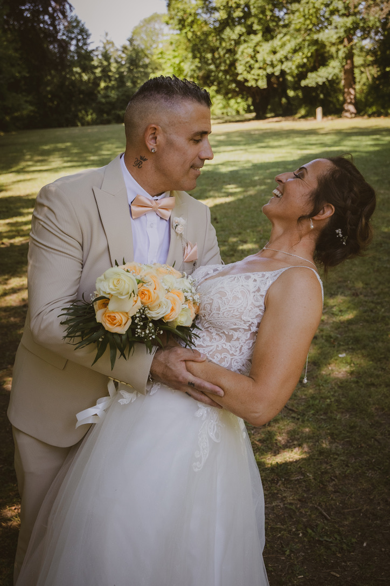

Mariages
Reportage complet de votre journée, des préparatifs à la soirée : des images naturelles, sans mise en scène forcée, qui vous ressemblent.

Photographe & graphiste
Mariages, reportages institutionnels, événementiel et identité visuelle — un regard sobre et soigné, pensé pour valoriser durablement votre image.
Prestations
Reportage complet de votre journée, des préparatifs à la soirée : des images naturelles, sans mise en scène forcée, qui vous ressemblent.
Portraits d'équipe, sites industriels, inaugurations, vie d'entreprise : des visuels professionnels pour vos supports de communication.
Séminaires, conférences, lancements de produits, soirées privées : une couverture discrète et réactive de vos temps forts.
Portraits, book, univers de marque : des séances photo sur-mesure adaptées à votre projet et à votre image.
Mise en valeur de vos visuels : supports de communication, retouche et direction artistique cohérente avec votre marque.
Parlons-en et construisons ensemble la prestation la plus adaptée à vos besoins.
Me contacterPortfolio
Un aperçu de mon travail en photographie de mariage — le reste de mon univers (corporate, événementiel, graphisme) est visible sur demande.

À propos
Photographe et graphiste, j'accompagne particuliers et entreprises dans la valorisation de leurs moments et de leur image : mariages, reportages institutionnels et corporate, événementiel, shootings et création graphique.
Mon approche reste la même quel que soit le projet : une écoute attentive de vos besoins, une prise de vue discrète et soignée, et une livraison de qualité pensée pour un usage professionnel comme personnel.
Discutons de votre projetContact
Mariage, reportage d'entreprise, événement ou création graphique : décrivez-moi votre besoin, je reviens vers vous rapidement.